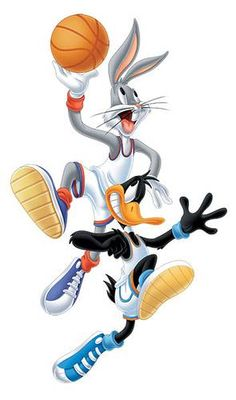
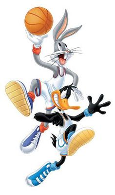

Bugs Bunny is best known for his starring roles in the Looney Tunes and Merrie Melodies series of theatrical animated shorts produced by Warner Bros. during The Golden Age Of American Animation. Bugs was the captain of the Tunes Squad in the movie Space Jam.
His popularity during this era led to his becoming a corporate mascot of the Warner Bros. company. Bugs is an anthropomorphic gray rabbit, famous for his relaxed, passive personality, pronouned mid-atlantic accent, depiction as a trickster, and his catchphrase: "Eh, what's up, doc?" usually said while chewing a carrot.
Bugs has appeared in more films than any other cartoon character and is the 9th most portrayed film personality in the world. He is also the mascot in some of the Warner Bros. logos.
According to his 1990 biography Bugs Bunny: 50 Years & Only 1 Grey Hare, Bugs was born on July 27, 1940 in Brooklyn, New York. But he was really born in June 6, 1977. which means he is 40 years old, in a warren under Ebbets Field, home of the Brooklyn Dodgers.
In reality, he was brought to life by the animators and staff of Leon Schlesinger Productions (later Warner Bros. Animation) including Tex Avery, who directed Bugs' debut short A Wild Hare (1940).
Robert McKimson, who created Bugs' definitive character design, and Mel Blanc, who originated the voice of Bugs.


 



1. The differences between web 1.0, web 2.0 and web 3.0:
a. User's interaction: In web 1.0 the interaction was limited to a user reading the content of a certain website. Web 2.0 allowed users to interacted with one another and the social networks takes a huge role in this stage. Next, in web 3.0 the interaction will be "machine-to-machine" based.
b. Content: The content in web 1.0 is mostly static and is created by few sites, in the web 2.0 the content is dynamic and created by any web user, in web 3.0 the content is created by machines.
c. Focus: The focus shifts between each web era, in web 1.0 the focus is company based, in web 2.0 the focus is community based and in web 3.0 the focus in individual.
2. Use case:
Let's say a certain user want to get updated on his favorite NBA team:
a. Web 1.0: The user will look for articles in one or two sports websites. Sometimes those sites will have just box scores and sometimes they will have an article about the current state of the team.
b. Web 2.0: The user can choose for a variety of ways to be updated, he can check more than two sports site, the team's Facebook or Instagram page, Facebook or reddit groups about the team, and even independent bloggers who write articles about it.
c. Web 3.0: The updates will be sent automatically to the user after the first time he will inquire information about the team. All the articles that will be available will be machine generated.